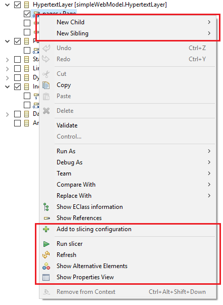

The menu is accessible from the action bar and by right-clicking in the Configuration Editor.
When the Configuration-tab is active, these actions allow editing the configuration manually.
This action can be performed on any EObjects in an Ecore-editor or -viewer and derives a configuration from the selected elements.
This action can be performed when the Configuration Editor is active or a slicing configuration is selected in an explorer and runs the slicer with the selected / opened configuration, a user-selected model, slicer and slicing context.
Refreshes the active view. Might be necessary if a resource was modified outside of the configuration editor
Shows the Alternative Elements View for the selected reference. Can only be performed for references in a Model-tab.
Shows the Properties View for the selected element.